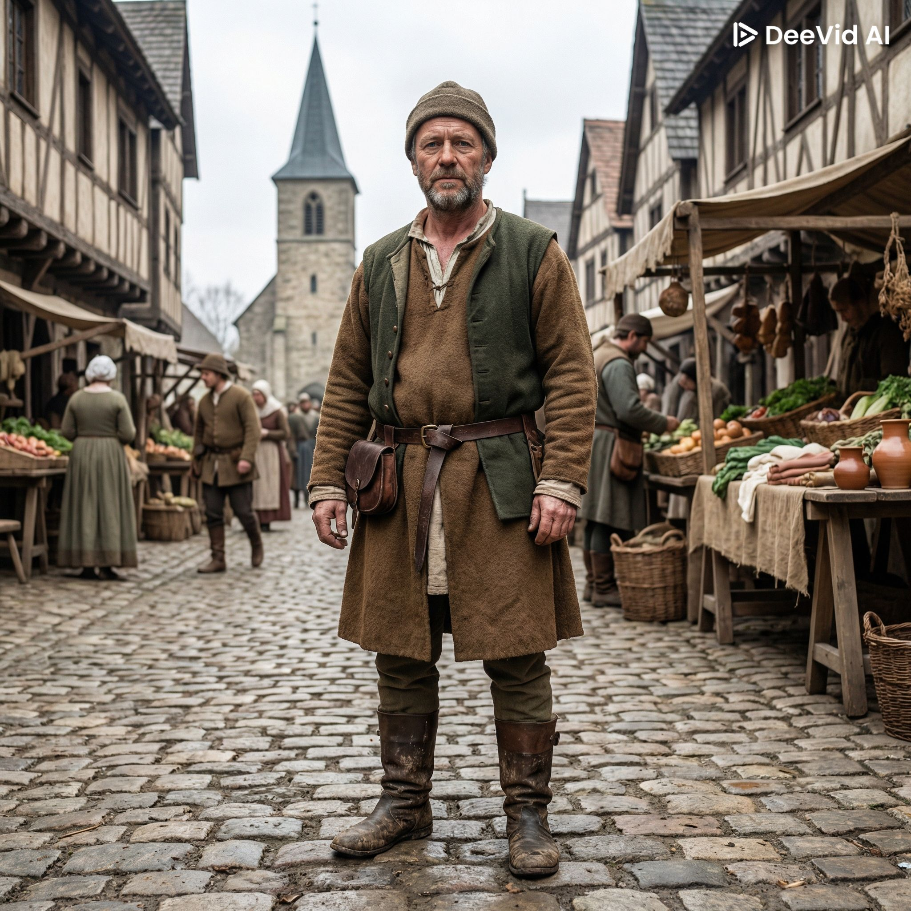
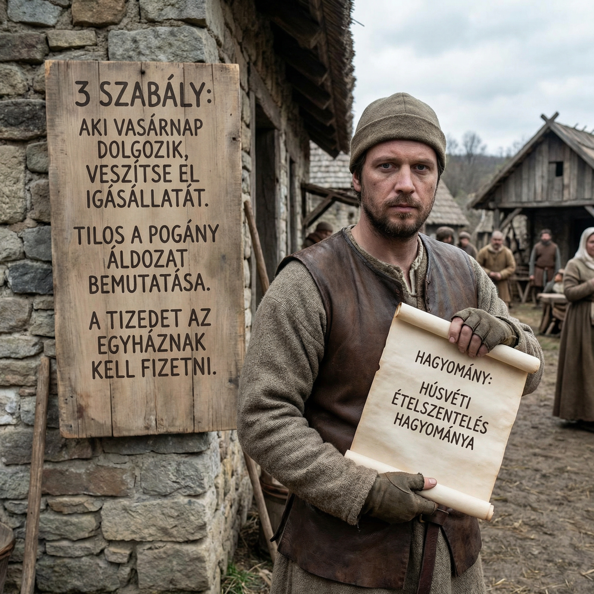
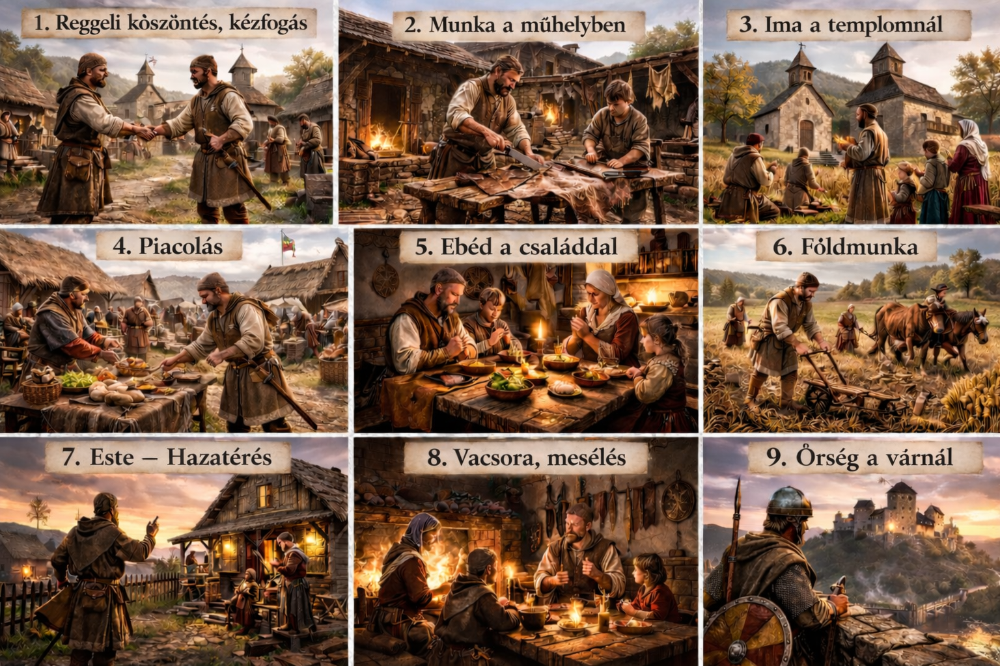
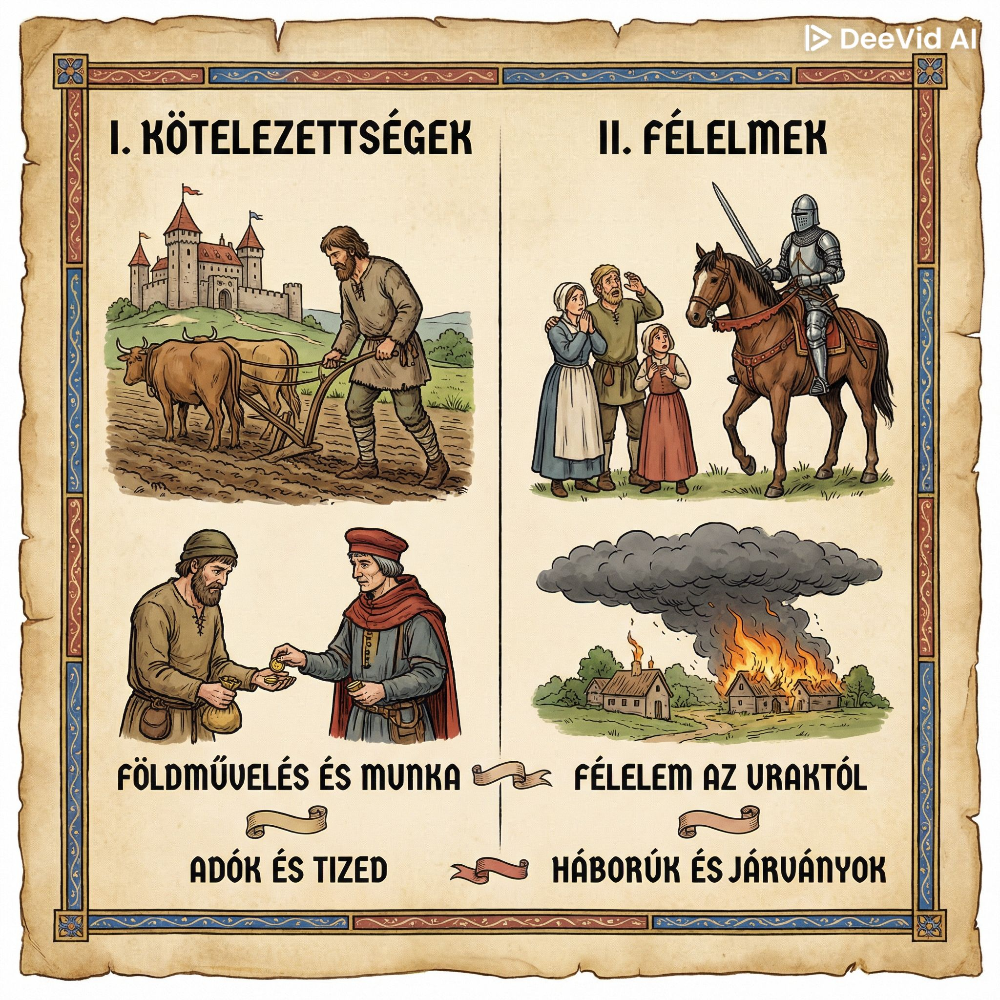
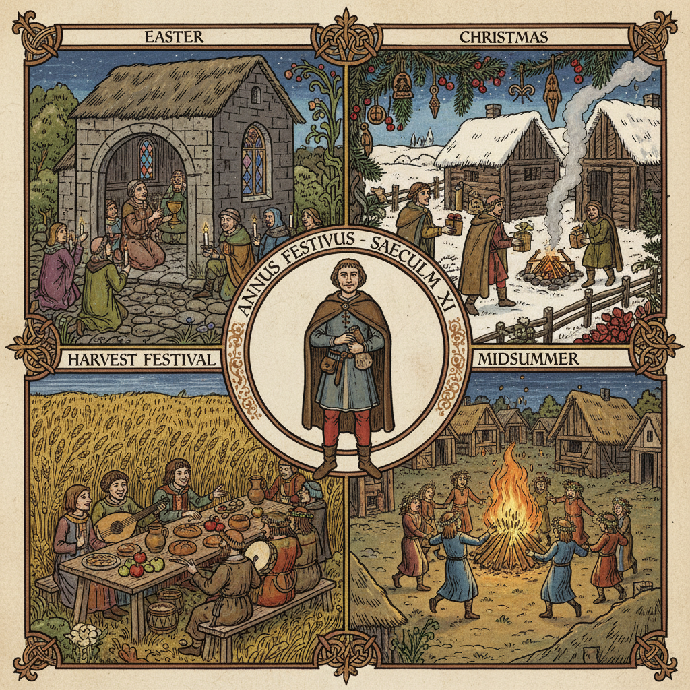

Életmódom

Középkori polgárként egy fallal körülvett városban élek. A házam egyben a műhelyem is, itt dolgozom, és itt él a családom. Én egy szabad polgár vagyok, nekem több jogom van, mint a jobbágyoknak. A cipészek céhéhez tartozom, amely meghatározza a munkámat és a helyemet a városban. Ruházatom és viselkedésem mutatja azt, hogy megbecsült polgár vagyok.
Szabályaim és hagyományaim polgár emberként

Engedelmeskedem a város vezetőinek és az uralkodónak, és tiszteletben tartom döntéseiket. Betartom a céh és a város törvényeit, mert jó hírnevem és becsületem a legfontosabb. Munkámat becsületesen végzem, és kereskedés közben tisztességesen járok el. Kötelességem részt venni az egyházi ünnepeken, vásárokon, és rendszeresen templomba járni.
Feladataim

Kézművesként vagy kereskedőként dolgozom, a mesterségemet a céh szabályai szerint végzem. Adót fizetek a királynak vagy a földesúrnak, és engedelmeskedem a város vezetőinek. Gondoskodom a családomról, valamint az inasokról és segédekről, akik nálam tanulnak.
Kötelezettségeim és félelmeim

Adót fizetek, és szükség esetén fegyvert fogok a város védelmében. Betartom a céh szabályait és a városi törvényeket. Gondoskodom a családomról és a tanítványaimról. Kiveszem a részem a közösségi munkákból és az egyházi életből.
Ünnepek

A legfontosabb ünnepek a karácsony, húsvét és pünkösd, de a szentek napjait is megünnepeljük, például Szent György napját, a tavaszi munkák kezdetének, a pásztorok és a legelőre hajtott állatok ünnepnapját. Az ünnepek azért fontosak számomra, mert erősítik a hitemet és segítik közelebb hozni egymáshoz a családot.